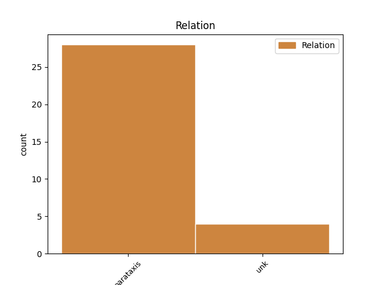
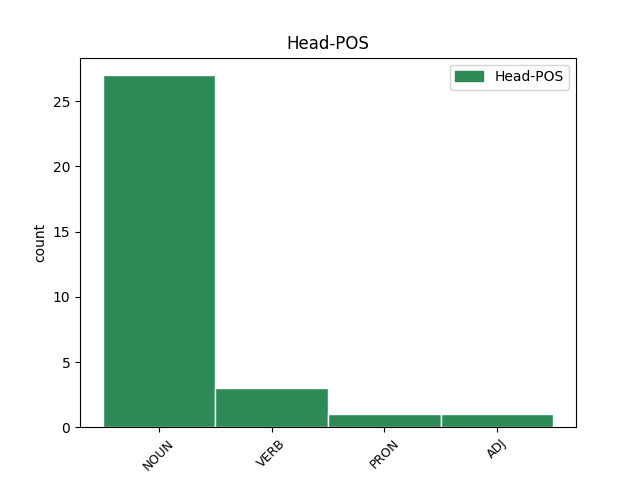
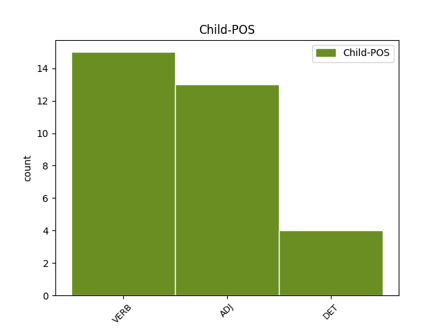

Distribution of features within this leaf



Agreement Rules sorted by frequency.
- When the dependent token is the parataxis(parataxis) of the head token, and the dependent token is VERB.
1 Governo governo NOUN S Gender=Masc|Number=Sing 0 _ _ _
2 tecnico _ _ _ _ 0 _ _ _
3 Mario _ _ _ _ 0 _ _ _
4 Monti _ _ _ _ 0 _ _ _
5 : _ _ _ _ 0 _ _ _
6 chi _ _ _ _ 0 _ _ _
7 è _ _ _ _ 0 _ _ _
8 il _ _ _ _ 0 _ _ _
9 prossimo _ _ _ _ 0 _ _ _
10 successore _ _ _ _ 0 _ _ _
11 di _ _ _ _ 0 _ _ _
12 Berlusconi _ _ _ _ 0 _ _ _
13 ? _ _ _ _ 0 _ _ _
14 : _ _ _ _ 0 _ _ _
15 Nominato nominare VERB V Gender=Masc|Number=Sing|Tense=Past|VerbForm=Part 1 parataxis _ _
16 senatore _ _ _ _ 0 _ _ _
17 a _ _ _ _ 0 _ _ _
18 vita _ _ _ _ 0 _ _ _
19 da _ _ _ _ 0 _ _ _
20 il _ _ _ _ 0 _ _ _
21 presidente _ _ _ _ 0 _ _ _
22 ... _ _ _ _ 0 _ _ _
23 http://t.co/2MNyvd8B _ _ _ _ 0 _ _ _
1 @user _ _ _ _ 0 _ _ _
2 uno uno PRON PI Gender=Masc|Number=Sing|PronType=Ind 0 _ _ _
3 di _ _ _ _ 0 _ _ _
4 i _ _ _ _ 0 _ _ _
5 più _ _ _ _ 0 _ _ _
6 grandi _ _ _ _ 0 _ _ _
7 di _ _ _ _ 0 _ _ _
8 tutti _ _ _ _ 0 _ _ _
9 i _ _ _ _ 0 _ _ _
10 tempi _ _ _ _ 0 _ _ _
11 . _ _ _ _ 0 _ _ _
12 perfetto perfetto ADJ A Gender=Masc|Number=Sing 2 parataxis _ SpaceAfter=No
13 . _ _ _ _ 0 _ _ _
14 grazie _ _ _ _ 0 _ _ _
15 di _ _ _ _ 0 _ _ _
16 cuore _ _ _ _ 0 _ _ _
17 #respect _ _ _ _ 0 _ _ _
1 Per _ _ _ _ 0 _ _ _
2 esempio _ _ _ _ 0 _ _ _
3 oggi _ _ _ _ 0 _ _ _
4 il _ _ _ _ 0 _ _ _
5 presidente _ _ _ _ 0 _ _ _
6 Mario _ _ _ _ 0 _ _ _
7 Monti _ _ _ _ 0 _ _ _
8 , _ _ _ _ 0 _ _ _
9 l' _ _ _ _ 0 _ _ _
10 uomo _ _ _ _ 0 _ _ _
11 che _ _ _ _ 0 _ _ _
12 sta _ _ _ _ 0 _ _ _
13 provando _ _ _ _ 0 _ _ _
14 a _ _ _ _ 0 _ _ _
15 dare _ _ _ _ 0 _ _ _
16 una _ _ _ _ 0 _ _ _
17 svolta _ _ _ _ 0 _ _ _
18 a _ _ _ _ 0 _ _ _
19 l' _ _ _ _ 0 _ _ _
20 Italia _ _ _ _ 0 _ _ _
21 , _ _ _ _ 0 _ _ _
22 ha _ _ _ _ 0 _ _ _
23 detto dire VERB V Gender=Masc|Number=Sing|Tense=Past|VerbForm=Part 0 _ _ _
24 : _ _ _ _ 0 _ _ _
25 I il DET RD Definite=Def|Gender=Masc|Number=Plur|PronType=Art 23 unk _ _
26 ... _ _ _ _ 0 _ _ _
27 http://t.co/ZuJ116DH _ _ _ _ 0 _ _ _
Disagree Examples:
1 Antipolitica antipolitica NOUN S Gender=Fem 0 _ _ _
2 i _ _ _ _ 0 _ _ _
3 5 _ _ _ _ 0 _ _ _
4 Stelle _ _ _ _ 0 _ _ _
5 ? _ _ _ _ 0 _ _ _
6 Ridicolo ridicolo ADJ A Gender=Masc|Number=Sing 1 parataxis _ SpaceAfter=No
7 ! _ _ _ _ 0 _ _ _
8 | _ _ _ _ 0 _ _ _
9 Fabio _ _ _ _ 0 _ _ _
10 Balocco _ _ _ _ 0 _ _ _
11 | _ _ _ _ 0 _ _ _
12 Il _ _ _ _ 0 _ _ _
13 Fatto _ _ _ _ 0 _ _ _
14 Quotidiano _ _ _ _ 0 _ _ _
15 http://t.co/Jwf5srX4 _ _ _ _ 0 _ _ _
16 via _ _ _ _ 0 _ _ _
17 @user _ _ _ _ 0 _ _ _
18 #Grillo _ _ _ _ 0 _ _ _
19 #M5S _ _ _ _ 0 _ _ _
1 Pensioni _ _ _ _ 0 _ _ _
2 e _ _ _ _ 0 _ _ _
3 Ici _ _ _ _ 0 _ _ _
4 , _ _ _ _ 0 _ _ _
5 ecco _ _ _ _ 0 _ _ _
6 i _ _ _ _ 0 _ _ _
7 ritocchi ritocco NOUN S Gender=Masc|Number=Plur 0 _ _ _
8 Abolite abolire VERB V Gender=Fem|Number=Plur|Tense=Past|VerbForm=Part 7 parataxis _ _
9 le _ _ _ _ 0 _ _ _
10 elezioni _ _ _ _ 0 _ _ _
11 provinciali _ _ _ _ 0 _ _ _
12 di _ _ _ _ 0 _ _ _
13 il _ _ _ _ 0 _ _ _
14 2012 _ _ _ _ 0 _ _ _
15 : _ _ _ _ 0 _ _ _
16 ROMA _ _ _ _ 0 _ _ _
17 Il _ _ _ _ 0 _ _ _
18 governo _ _ _ _ 0 _ _ _
19 Monti _ _ _ _ 0 _ _ _
20 studia _ _ _ _ 0 _ _ _
21 alcuni _ _ _ _ 0 _ _ _
22 ... _ _ _ _ 0 _ _ _
23 http://t.co/tYrpo6IZ _ _ _ _ 0 _ _ _
1 Marcia marcia NOUN S Gender=Fem|Number=Sing 0 _ _ _
2 indietro _ _ _ _ 0 _ _ _
3 di _ _ _ _ 0 _ _ _
4 il _ _ _ _ 0 _ _ _
5 governo _ _ _ _ 0 _ _ _
6 Monti _ _ _ _ 0 _ _ _
7 : _ _ _ _ 0 _ _ _
8 modificato modificare VERB V Gender=Masc|Number=Sing|Tense=Past|VerbForm=Part 1 parataxis _ _
9 il _ _ _ _ 0 _ _ _
10 provvedimento _ _ _ _ 0 _ _ _
11 su _ _ _ _ 0 _ _ _
12 il _ _ _ _ 0 _ _ _
13 fotovoltaico _ _ _ _ 0 _ _ _
14 su _ _ _ _ 0 _ _ _
15 terreni _ _ _ _ 0 _ _ _
16 agricoli _ _ _ _ 0 _ _ _
17 http://t.co/ojQvMCoJ _ _ _ _ 0 _ _ _
1 Due _ _ _ _ 0 _ _ _
2 scioperi sciopero NOUN S Gender=Masc|Number=Plur 0 _ _ _
3 , _ _ _ _ 0 _ _ _
4 flash _ _ _ _ 0 _ _ _
5 mob _ _ _ _ 0 _ _ _
6 , _ _ _ _ 0 _ _ _
7 sit-in _ _ _ _ 0 _ _ _
8 e _ _ _ _ 0 _ _ _
9 due _ _ _ _ 0 _ _ _
10 cortei _ _ _ _ 0 _ _ _
11 . _ _ _ _ 0 _ _ _
12 Roma _ _ _ _ 0 _ _ _
13 paralizzata paralizzato ADJ A Gender=Fem|Number=Sing 2 parataxis _ _
14 in _ _ _ _ 0 _ _ _
15 il _ _ _ _ 0 _ _ _
16 primo _ _ _ _ 0 _ _ _
17 giorno _ _ _ _ 0 _ _ _
18 di _ _ _ _ 0 _ _ _
19 il _ _ _ _ 0 _ _ _
20 governo _ _ _ _ 0 _ _ _
21 Monti _ _ _ _ 0 _ _ _
22 : _ _ _ _ 0 _ _ _
23 http://t.co/dnR5GGrI _ _ _ _ 0 _ _ _
1 Ieri _ _ _ _ 0 _ _ _
2 serata serata NOUN S Gender=Fem|Number=Sing 0 _ _ _
3 importante _ _ _ _ 0 _ _ _
4 . _ _ _ _ 0 _ _ _
5 Confermato confermare VERB V Gender=Masc|Number=Sing|Tense=Past|VerbForm=Part 2 parataxis _ _
6 da _ _ _ _ 0 _ _ _
7 #abc _ _ _ _ 0 _ _ _
8 l' _ _ _ _ 0 _ _ _
9 impegno _ _ _ _ 0 _ _ _
10 a _ _ _ _ 0 _ _ _
11 sostenere _ _ _ _ 0 _ _ _
12 il _ _ _ _ 0 _ _ _
13 governo _ _ _ _ 0 _ _ _
14 #Monti _ _ _ _ 0 _ _ _
15 , _ _ _ _ 0 _ _ _
16 non _ _ _ _ 0 _ _ _
17 solo _ _ _ _ 0 _ _ _
18 su _ _ _ _ 0 _ _ _
19 i _ _ _ _ 0 _ _ _
20 temi _ _ _ _ 0 _ _ _
21 economici _ _ _ _ 0 _ _ _
22 e _ _ _ _ 0 _ _ _
23 sociali _ _ _ _ 0 _ _ _
24 . _ _ _ _ 0 _ _ _